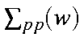
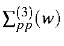
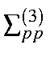

The OVGF technique was used with the self-energy part extended to include
third order perturbation corrections, [34]. The higher order contributions
were estimated by the renormalization procedure. The actual expression used to
calculate the self-energy part,
,
chosen in the diagonal form,
is given in equation (1), where
and

are
the second- and third-order corrections, and A is the screening factor accounting
for all the contributions of higher orders.
In equation (2), i and j denote occupied orbitals, a and b denote virtual orbitals, p denotes orbitals of unspecified occupancy, and
e denotes an orbital energy. The equations are solved by an iterative
procedure, represented in equation (3).
The SCF energies and the corresponding integrals, which were calculated by one of the semiempirical methods (MNDO, AM1, or PM3), were taken as the zero'th approximation and all M.O.s may be included in the active space for the OVGF calculations.
The expressions used for  and A are given in [35].
The OVGF method itself, is described in detail in [34].